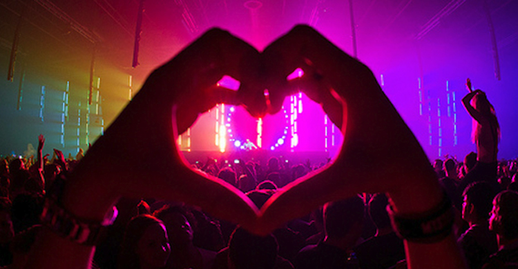

Summer is fast approaching, and with it, music festival season! Large scale dance music events take place all over the world from Tomorrowland in Boom, Belgium to the Full Moon Parties of Thailand- but many of these festivals happen right here in the western portion of the United States! Today we are going to take a tour of some of the amazing events coming up this year that are scheduled to take place right in our backyard!
In 2012, United States of Conciousness and Live Nation hosted the very first Paradios Music Festival at the George Ampitheater in George, Washingtion. Now in its 5th year, the two day festival features three diverse stages hosting a wide variety of dance music artists, live art, and much more! This year's lineup is still yet to be relased but past years have featured headliners such as Skrillex, Bassnectar, Armin Van Buren, Zedd, Above & Beyond and Zedd!
Paradiso Music Festival is widely regarded as the largest electronic music event in the Pacific Northwest, attracting more than 20,000 fans from all over the world in 2016! The Gorge Ampitheater offers a picturesque backdrop for what many ravers in the northwest as the best weekend of the year
This years festival takes place on Friday, June 23rd and Saturday, June 24th. Those wishing to attend Paradiso Music Festival can find tickets and camping passes avalible at http//:paradisofestival.com.
What The Festival is an immersive art and music festival experience taking place each summer in Wolf Run Ranch, Oregon at the edge of the Mount Hood National Forest. The festival website describes its mission statement as "Our mission is simple: We want to move your bodies, senses, and souls. We want you to leave feeling connected and to be inspired from your full immersion into art, music, and community." This years headliners include Zhu, Cut Copy, and Gramatik
Feeling the Pacific Northwest’s growing desire for a transformational festival with an electronic music and visual art component, the founders of What The Festival were inspired by their years of involvement at Burning Man and music production. What started as a vision, quickly became a tangible reality in 2012. In its first year, What The Festival was hosted at White River Canyon, Oregon, then graduated the following year to the now-permanent-home of Wolf Run Ranch where it has remained ever since. Five years later, What The Festival has grown but the boutique experience has not disappeared. As our pack grows larger, so do our hearts, and we invite you to participate to the fullest.
What the Festival takes place this Summer from June 16th-19th at Wolf Run Ranch, OR. Tickets are still avalible at http://whatthefestival.com/weekend-passes/
What The Festival 2016 | (OFFICIAL) After Movie from What The Festival on Vimeo.
Symbiosis Presents: Oregon Eclipse 2017 is by far and away the most unique event on this tour as the festival serves to mark the upcoming total solar eclipse that will be visible in the area durring the festival durratoin. This event is a collaboration between festival throwing companies the world over working to bring a powerful experience to patrons in attendance. Oregon Eclipse is only going to happen once, and will feature eight stages hosting performaces of all types from heavy bass music to live theatrical performances. Families are encouraged to attend with ample opportunites for fun and personal growth for people of all ages!
This experience will see a coming together of peoples that will happen one time only in alignment with one of the most spectacular phenomena one can ever witness.
Experience Passes are still avalible at http://oregoneclipse2017.com/trailblazer-pass/
Total Solar Eclipse Explainer from Symbiosis Gathering on Vimeo.
Lightning in a Bottle (LIB) is a transformational festival in the Central Coast region of California presented by The Do LaB. The Do LaB seeks to promote sustainability, social cohesion, personal health, and creative expression. They have also contributed art installations to the Coachella Valley Music and Arts Festival in Indio, California.
The festival returning to its home in San Antonio Reservoir Recreation Area in Bradley, CA for its 17th iteration. Headliners this year include Bassnectar, Rufus Del Sol, Troyboi, and Kaytranata
Small numbers of tier three tickets are still avalible at https://www.eventbrite.com/e/lightning-in-a-bottle-arts-music-festival-2017-tickets-30281032383
Electric Daisy Carnival, commonly known as EDC, is one of the biggest electronic dance music festivals in the world, with its flagship held annually in Las Vegas, Nevada. Big name electronic dance producers and DJ's such as Diplo, Jauz, the Chainsmokers, and Tiësto perform at the many locations held yearly for EDC. The festival incorporates various styles of dance music including trap, bounce, trance, techno, bass, house, and more.
Insomnica Events has grown up to host EDC events all over the world, with the second largest next to the Vegas festival taking place in Mexico City this year. Additionally, 2016 saw the launch of EDC Week taking place at nightclubs and pool parties all up and down the Las Vegas strip durring the week leading up to the festival. This year's lineup is still to be announced, however dance music fans can be assured that the festival will always bring about the absolute best of the best.
This year's event is taking place from June 16th-June 18th. Tickets and shuttle passes for this year's EDC are avalible at http://lasvegas.electricdaisycarnival.com/2016/11/28/edc-las-vegas-2017-tickets-sale-now/
Whether one is looking to venture far from home to experience this summer's festival season, or simply take a jaunt in one's own backyard, those looking to party hard this summer have many many options open to them. Whether or not one is looking for a spiritually empowereing time spent taking in art in its many forms, or looking to be transported into a technicolor pipedream of sounds and lights, there is a festival out here in the west for you!
No matter where you end up this festival season, please remember that the law is the law, and all choices have consequences. Please party safe, drink lots of water, take care of your friends, drink even more water, and remember to keep the PLUR spirit alive!